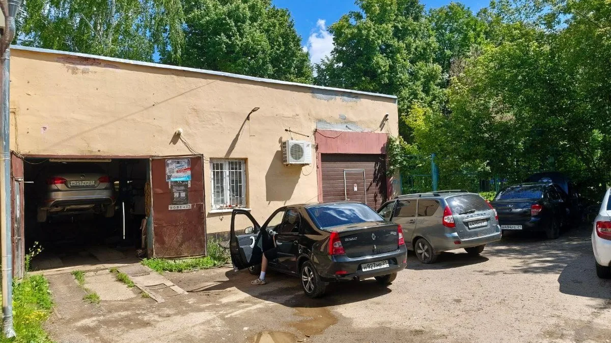
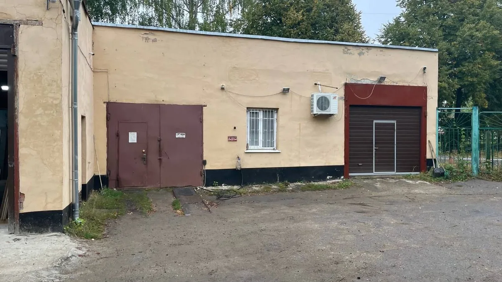
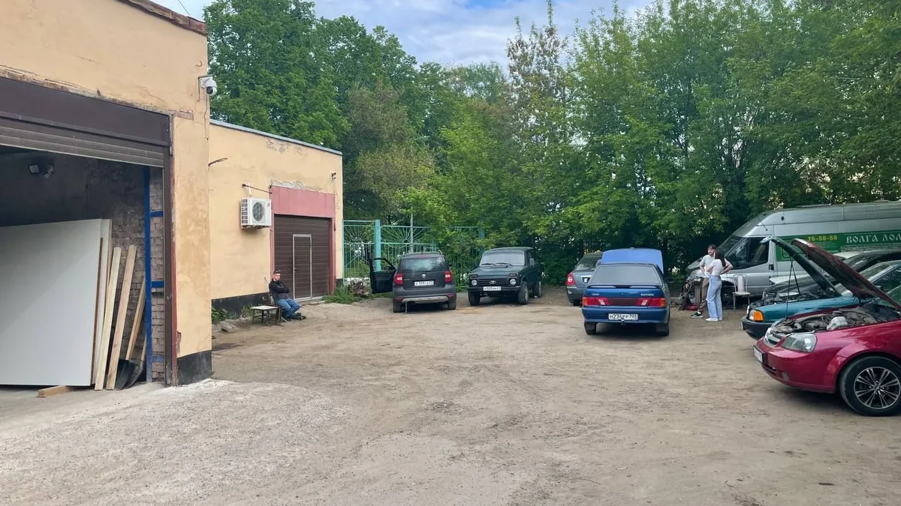
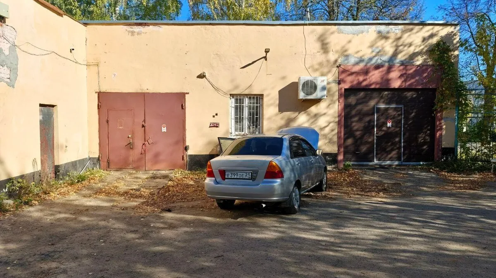

Автосервис в Чебоксарах · Социалистическая улица, 17А
Автоэлектрик и компьютерная диагностика авто в Чебоксарах
Stage 21 на Социалистической улице, 17А: диагностика и ремонт автоэлектрики, чип-тюнинг, чистка форсунок, ремонт ходовой и тормозов. Находим причину и объясняем, что нужно сделать.
- 5,0 на Яндекс Картах, 324 оценки
- Пн-Пт с 08:00 до 17:00
- Диагностика от 500 ₽

Услуги Stage 21 в Чебоксарах
Входит
- Ремонт автоэлектрики и электроники
- Компьютерная диагностика
- Чип-тюнинг и обновление ПО
- Чистка и ремонт форсунок
- Ремонт ходовой и тормозной системы
- Ремонт подушек безопасности и сварочные работы
Отдельно, если нужно
- Оплата картой и по СБП
- Парковка и зона ожидания
- Работаем пн-пт с 08:00 до 17:00
- Адрес: Чебоксары, Социалистическая улица, 17А
Цены на ремонт и обслуживание в Чебоксарах
Цены с карточки автосервиса, обновлены 2 октября. Итоговую сумму мастер называет после осмотра и согласует до начала работ.
Диагностика
- Компьютерная диагностика (отечественные авто)500 ₽
- Компьютерная диагностика (иномарки)800 ₽
- Проверка утечки дымогенератором800 ₽
Двигатель и электроника
- Чистка бензиновых форсунок (4 шт.)2400 ₽
- Обновление ПО двигателя (Vesta, Granta)3000 ₽
- Обновление ПО роботизированной КПП (Vesta, Granta, Priora, Xray)3500 ₽
Цены даны за работу. Актуальные цены уточняйте по телефону перед визитом.
Как записаться в автосервис в Чебоксарах
- 01
Выбрали услугу и время
Выберите услугу, день и час в форме - заявка сформируется, дальше позвоните по номеру +7 (927) 845-32-77. Марку, год и что беспокоит расскажете по телефону.
- 02
Подтвердили время
Время подтверждаем по звонку: +7 (927) 845-32-77.
- 03
Диагностика и согласование
Мастер осматривает автомобиль, называет работы и стоимость. Дальше - по вашему решению.
- 04
Выдача автомобиля
Осмотрите результат вместе с мастером до оплаты.



Что пишут клиенты Stage 21
Нашли причину там, где не смогли другие
«Единственный электрик в городе, который, разобрался с проблемой моего авто» - Наталия, 2 июля 2025.
Всё за один визит
«Мастер оперативно определил проблему и что надо сделать. Работу сделали быстро и уверенно, неисправность устранена» - Михаил С., 4 февраля.
Починили электрику полностью
«Мой авто исправили полностью: была проблема и фарами и фонарями» - Olga Kim, 22 августа 2025.
Отзывы с Яндекс.Карт
«Хорошие специалисты, быстро и качественно. Единственный электрик в городе, который, разобрался с проблемой моего авто.»
Наталия · 2 июля 2025
«Приехал с чеком двигателя, мастер оперативно определил проблему и что надо сделать. Работу сделали быстро и уверенно, неисправность устранена, я довольный уехал по своим делам, всё в рамках одного визита.»
Михаил С. · 4 февраля
«Хочу порекомендовать данный сервис всем, у кого проблема с электрикой! Мой авто исправили полностью: была проблема и фарами и фонарями. Все проблемы нашли, все исправили.»
Olga Kim · 22 августа 2025
Отзывы с карточки на Яндекс.Картах, без правок.
Частые вопросы
Какие работы делаете?
Диагностика и ремонт автоэлектрики, компьютерная диагностика, чип-тюнинг и обновление ПО, чистка форсунок, ремонт ходовой и тормозов.
Сколько стоит диагностика?
Компьютерная диагностика отечественных авто - от 500 ₽, иномарок - от 800 ₽. Итоговую сумму мастер называет перед началом работ.
Нужно ли записываться заранее?
Лучше записаться: выберите услугу, день и время в форме на сайте, затем позвоните по номеру +7 (927) 845-32-77 для подтверждения.
Когда вы работаете?
Понедельник-пятница с 08:00 до 17:00, суббота и воскресенье - выходные.
Можно ли оплатить картой?
Да, принимаем карты, оплату по СБП, QR-коду и безналичный расчёт.
Где находится автосервис?
Чебоксары, Социалистическая улица, 17А. Рядом есть парковка.
Запишитесь на диагностику или ремонт электрики
- Адрес
- Социалистическая улица, 17А, Чебоксары
- Часы
- Пн-Пт 08:00-17:00
- Телефон
- +7 (927) 845-32-77